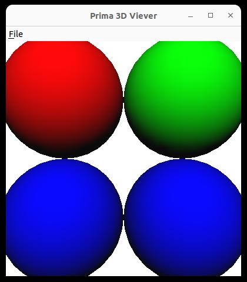
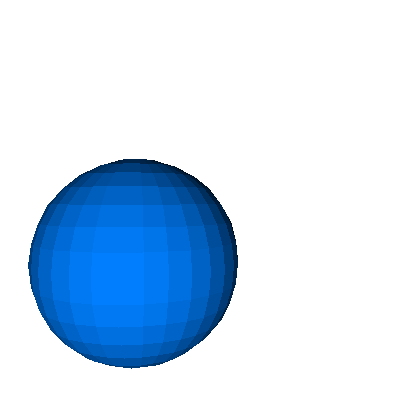

Manipulating 3D Objects with Perl
April 2024
Workflow
- Edit the POV-Ray scene
- Render...
- Fix errors in the scene file
- Rinse and repeat...
- Improve the design
- Rinse and repeat...
Candidates
- Moray: a POV-Ray modeler, apparently withered away
- Blender: Great, but exports meshes for everything
- OpenSCAD: Good for constructing, but no match for POV-Ray rendering quality
Perl GUI Toolkits
- In the past, I had used Tk, Gtk, Qt, and Wx
-
Some are a pain (or impossible) to build or don't work on
Windows
...so it's not as TIMTOWTDI as one would think - Good ol' Tk just works
- Big thanks to Slaven Rezić for keeping Tk alive!
Can we do ... faster?
Tk is ... a bit slow for thousands of polygons.
Time to learn something new.
OpenGL
"The Industry's Foundation for High Performance Graphics"
I learned it from an online version of "The Official Guide to Learning OpenGL, Version 1.1" (1998)
I could easily translate the examples from C to Perl's OpenGL module (which says it supports version 1.2) 👍
...but the guide is no longer online 😢
OpenGL
...is about to be superseded by Vulkan
"Vulkan is a cross-platform industry standard enabling developers to target a wide range of devices with the same graphics API."
...for which there are no Perl bindings (yet)
So let's stick with what we have
Prima
...is a GUI toolkit which can be built and works on Linux and Windows (and Mac/OSX)
...Dmitry Karasik is an active maintainer (e.g. 5 releases in 2023) 👍
...and it allows use of OpenGL in a widget 👍
A Viewer
In the early days of the web, with 256-color images, Netscape used a universal palette. This rendering of the "Netscape color cube" has more than 100000 polygons.
On my PC at home this renders in 5 milliseconds.
Persisting a Scene
3D file formats
...don't look too attractive.
- Wavefront OBJ and other binary formats: I want text!
- POV-Ray Scene Description Language: too powerful!
I can't write a parser for POV-Ray SDL -
Extensible 3D (X3D): XML isn't actually meant for humans
to write nor read
X3DOM is a candidate for import/export
Or...
- Serialize and store the Perl scene object: Storable and friends to the rescue!
Or maybe not?
Modern Times
- The code uses Object::Pad and Feature::Compat::Class (Perl 5.38 classes)
-
One can not bless arbitrary data structures into
these modules' classes
→ makes loading a scene difficult
But also...
- The constructor can not create objects in arbitrary positions and orientations
Box Construction in 3D

Use the Power of Perl
As of today, I write scenes with an editor and use the programs only as viewers.
The next slides show some examples.
All values have defaults
Appearance and Transformations
are Methods
Curlies for Grouping
...and for Animation!
Color Cube
A Timer
What's Next?
- Clean up the mess
- Make the API consistent
-
X3DOM output
Perl PPC 19 (template strings) will be very useful - More shapes
- More options for appearance